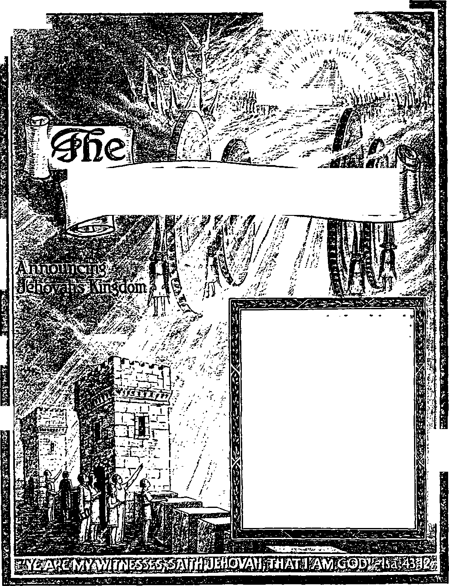

r<c> t ’ *4 'i> ' !
I
$
I
4 J.i?
1
Vol. LXVI Semimonthly
DECEMBER 1, 1945
C 0 N T E N T 8
“His Unspeakable Gift” ..............
Giving for the Consecrated Poor Careful Management of Chanty Generosity of the Poor ................
The Mark that Counts.................
Fate of Those Not Marked .........
Solomon, Seeker or Wisdom .......
Field Experiences ..............„...........
“Treasure or Service"
Testimony Period __________________
“Watchtower” Studies .................
No, 23
.. 355 .357 . 359 .. 361
.. 364 .. 365 . 366 .. 367
354
354
1946 Yearbook or Jehovah’s witnesses 354
1946 Service Calendar
354
!?■;
T"
rlr
Published Semimonthly Bt
WATCH TOWER BIBLE & TRACT SOCIETY 117 Adams Street - - Brooklyn 1, N.Y., U.S.A.
Officers
N. H. Knorr, President W. E. Van Ambubgh, Secretary “And all thy children shall be taught of Jehovah; and great shall be the peace of thy children.” - hatah 54:13.
THE SCRIPTURES CLEARLY TEACH
THAT JEHOVAH is the only true God and is from everlasting to everlasting, the Maker of heaven and earth and the Giver of life to his creatures; that the Logos was the beginning of his creation, and his active agent in the creation of all other things, and is now the Lord Jesus Christ in glory, clothed with all power in heaven and earth, as the Chief Executive Officer of Jehovah;
THAT GOD created the earth for man, created perfect man for the earth and placed him upon it; that man willfully disobeyed God’s law and was sentenced to death; that by reason of Adam’s wrong act all men are born sinners and without the right to life;
THAT THE LOGOS was made human as the man Jesus and suffered death in order to produce the ransom or redemptive price for obedient ones of mankind; that God raised up Jesus divine and exalted him to heaven above every other creature and above every creature’s name and clothed him with ail power and authority;
THAT GOD’S CAPITAL ORGANIZATION is a Theocracy called Zion, and that Christ Jesus is the Chief Officer thereof and is the rightful King of the world; that the anointed and faithful followers of Christ Jesus are children of Zion, members of Jehovah’s organization, and are his witnesses whose duty and privilege it is to testify to the supremacy of Jehovah, declare his purposes toward mankind as expressed in the Bible, and to bear the fruits of the Kingdom before all who will hear;
THAT THE OLD WORLD ended in A. D. 1914, and the Lord Jesus Christ has been placed by Jehovah upon his throne of authority, has ousted Satan from heaven and is proceeding to the establishment of the "new earth” of the New World;
THAT THE RELIEF and blessings of the peoples of earth can come only by and through Jehovah’s kingdom under Christ, which has now begun; that the Lord’s next great act is the destruction of Satan’s organization and the complete establishment of righteousness m the earth, and that under the Kingdom the people of good-will that survive Armageddon shall carry out the divine mandate to “fill the earth” with a righteous race.
ITS MISSION
HIS Journal is published for the purpose of enabling the people to know Jehovah God and his purposes as expressed in the Bible. It publishes Bible instruction specifically designed to aid Jehovah’s witnesses and all people of good-wilL
It arranges systematic Bible study for its readers and the Society supplies other literature to aid in such studies. It publishes suitable material for radio broadcasting and for other means of public instruction in the Scriptures.
It adheres strictly to the Bible as authority for its utterances. It is entirely free and separate from all religion, parties, sects or other worldly organizations. It is wholly and without reservation for the kingdom of Jehovah God under Christ his beloved King. It is not dogmatic, but invites careful and critical examination of its contents in the light of the Scriptures. It does not indulge in controversy, and its columns are not open to personalities.
Teablt Subscription Price
United States, 11.00: an other countries, 11.50, American currency; Great Britain, Australasia, and South Africa. 6s. American remittances should be made by Postal or Express Money Order or by Bank Draft. British, South African and Australasian remittances should be made direct to the respective branch offices Remittance* fimn countries other than tbose mentioned may be made to the Brooklyn office, but by InfemaHonol Postal Money Order only.
Foreign Otfices
British............. 34 Craven Terrace. London, W. 2. Enklnnd
4«<tralaa<as .............. .. 7 Beresford Road. Strathfleld. N. A W . Australia
South African____________Boaton House. Cape Town. South Africa
Indian ____________167 Love Lane. Bombay 27. India
Please address the Society In every case.
Translations of this Journal appear In several languages.
ALL SINCERE STUDENTS OF THE BIBLE who by reason of Infirmity, poverty or adversity are unable to pay the subscription price may have The Watchtower tree upon written application to the publixue.-s. made once each year, stating the reason for so requesting It We are glad to thus aid the needy, but the written application once each jear is required by the postal regulations.
Notice to Subscribers: Acknowledgment of a new or a renewal subscription will be sent only when requested. Change of nddres*. when requested, may be expected to appear on address label within one month. A renewal blank (Carrying notice of expiration) will be sent with the journal one month before the aubacription expires.
Printed in the United States of America entered as second-class matter of the post oglee at Brooklyn, N. V,. under the Act of Hatch S, ISIS.
“TREASURE OF SERVICE” TESTIMONY PERIOD
Each Watchtower reader can make December a month of enjoying a glorious “treasure of service” for himself. All it needs is to take part with Jehovah’s witnesses in the “Treasure of Service” Testimony Period, which has been assigned to cover the entire last month of this calendar year. Not every human is privileged by the Lord God to participate in this service of bearing testimony to his Kingdom, and that is why you can appreciate it to be such a treasure to serve now as an announcer of that righteous Government. Such service will be rendered during December by using the 25c combination of “The Kingdom Is at Hand” and the latest booklet, The “Commander to the Peoples”, in door-to-door witnessing. This direct work will, of course, be supplemented by the treasuresome follow-up service, that of back-calls and opening up book studies. Who will avail himself of this blessed service treasure! We trust that your report of work at the month’s close will register an “I” for you.
“WATCHTOWER” STUDIES
Week of January 6: “His Unspeakable Gift,” fl 1-18 inclusive, The Watchtower December 1, 1945.
Week of January 13: “His Unspeakable Gift,"
fl 19-41 inclusive, The Watchtower December 1, 1945.
1946 YEARBOOK OF JEHOVAH’S WITNESSES
The 1946 Yearbook really records an epoch, namely, the work of the Lord’s witnesses world-wide during the year that marked the end of the most ferocious of global wars, with all the release of news that this afforded, and the resumption of activities in the many war-ravaged lands by God's consecrated people now released from the oppressions and restraints of totalitarian rule and allembracing war-regimentation. The report of the work for the 1945 service year on continental Europe, in the Orient, in fact, for the eastern and western hemispheres as a whole, is by the Wutch Tower Society president, and his introduction to the report will thnll you and get you in the mood for the reports to follow from all lands from which information has come through. The Yearbook also offers the president’s comment on the 1946 yeartext, accompanied by a daily text and comment from published Watchtower sources for each day of the year. The posting of 50c a copy, mailed postpaid, for the 1946 Yearbook of Jehovah’s witnesses is made necessary by the limited distribution and printing. All groups should pool their individual orders and send in the same as a unit, to economize time and expense in shipment.
1*46 SERVICE CALENDAR
What a theme the Lord has provided through his organization for the calendar year of 19461 It is, "Be glad, ye nations, with his people.”—Romans 15:10, Rotherham. This text 13 commented
(Continued on page 368)
Vol. LXVI December 1, 1945 No. 23
"Thanks be unto God for his unspeakable gift.”—2 Cor. 9:15.
JEHOVAH God was the first to give. Ever since he began expending his power to start creation he has been giving. Good things which we may bestow upon one another are only things which belong to the Creator and of which we human givers may have possession for a time. Long ago a king of the then best government on earth expressed the thought in these words addressed to the Great Giver: “All that is in the heavens and in the earth is thine; thine is the kingdom, 0 Jehovah, and thou art exalted as head above all. Both riches and honor come of thee, and thou rulest over all; and in thy hand is power and might; and in thy hand it is to make great, and to give strength unto all. Now therefore, our God, we thank thee, and praise thy glorious name. But who am I, and what is my people, that we should be able to offer so willingly after this sort? for all things come of thee, and of thine own have we given thee.”—1 Chron. 29:11-14, Am. Stan. Ver.
'The apostle Paul cries out gratefully: "Thanks be unto God for his unspeakable gift.” (2 Cor. 9:15) Or, more forcefully said: “Thank God for his indescribable gift!” {Goodspeed) The gift for which Paul thanked God in these words is quite generally understood to mean the beloved Son of God, namely, Christ Jesus. During the month of December, certain religionists of “Christendom'’ are accustomed to indulge in a holiday orgy of interchanging gifts between relatives and friends, and some may be heard to quote 2 Corinthians 9:15 as a justification for making holiday. But their religious holiday is not a gift from God; for it is nowhere commanded or authorized in the Bible. It has nothing whatever to do with God’s unspeakable gift, regardless of the name of the holiday. According to the discussion by which the apostle Paul leads up to his classic expression of thanksgiving, the unspeakable, indescribable gift of God refers to something broader than his Son Jesus Christ. In Paul’s antecedent words Christ Jesus is not directly under discussion. There is no denying that Christ Jesus the Son of God is the essential basis and the sole channel for God’s unspeakable gift, but the gift is something more comprehensive.
* Of all gifts, Christ Jesus is God’s greatest gift, and nothing could surpass that beloved Son as a gift. But the Son of God is, in himself, not the end or completion of God’s giving. Looking upon God’s first-begotten Son as a gift, Christ Jesus himself said: “For God so loved the world, that he gave his only begotten Son, that whosoever believeth in him should not perish, but have everlasting life. For God sent not his Son into the world to condemn the world; but that the world through him might be saved.” (John 3:16, 17) Most manifestly then, the world which God so loved as to give his only begotten Son could not be this wicked world. Concerning this wicked world Christ Jesus said: “Now is the judgment of this world: now shall the prince of this world.be cast out.” “The prince of this world cometh, and hath nothing in me.” (John 12:31; 14:30) The reason why those statements are so is that the prince of this world is Satan the Devil, who blinds the minds of the vast majority of humankind lest they believe in the only begotten Son of God. (2 Cor. 4: 4) In harmony with that fact Christ Jesus prayed to God for his disciples left on earth, saying: “I pray for them: I pray not for the world, but for them which thou hast given me; for they are thine. I have given them thy word; and the world hath hated them, because they are not of the world, even as I am not of the world.” These words, at John 17:9, 14, 16, prove further that this present wicked world under Prince Satan is not the world which aroused God’s love to such an extent as to give his beloved Son Christ Jesus.
‘Jehovah God does not love something that he forbids his faithful sons and servants to love. Neither would he give his Son for a losing cause and hence give him in vain. Therefore this wicked world is at once stricken out from being the world which God so dearly loved when the apostle John writes to the Christians: “The word of God abideth in you, and ye have overcome the wicked one. Love not the world, neither the things that are in the world. If any man love the world, the love of the Father is not in him. For all that is in the world, the lust of the flesh, and the lust of the eyes, and the pride of life, is not of the Father, but is of the world. And the world passeth away, and the lust thereof: but he that doeth the will of God abideth for ever.” (1 John 2:14-17) In view of this, it is necessary, when considering Jesus’ words at John 3:16, to vindicate Jehovah’s love of righteousness. Rightly, his extraordinary love could be only for a righteous world, a world of justice such as he would not destroy but which he would preserve forever. Reasonably, for the establishment of such an enduring world of righteousness Jehovah God would, with vindication to Himself, give his chief and most loved Son, Christ Jesus.
1. Since when has the first giver been giving? and how should we 3. How does Christ Jesus rank as God's gift? and what words of
view our own giving? Jesus show It was not for this world that be was given by God’
2 To whom are Paul’s words at 2 Corinthians 9'15 generally applied? 4. According to 1 John 2:14*17, why could It not be love of this world
but what relation does such one have to the “unspeakable gift”? that prompted God's gift of his Son?
355
‘In looking at Jesus’ words, at John 3:16, the religionists fix their attention most strongly upon the latter part of the verse which says: “That whosoever believeth in him should not perish, but have everlasting life.” They have the salvation of human creatures mainly in mind and look upon it as the thing of prime importance. They put the creature ahead of the Creator. Now, if it had been just the salvation of men that was involved and that God was chiefly working to effect, then he could have sent down any of his spirit sons from heaven and had this one become a man, being born of a woman. How so! Because the mere salvation of human creatures by means of a ransom price would have merely required the price of a perfect human life equal in value to that of perfect Adam in Eden. God’s righteous law demanded in the matter of balancing justice: “If any mischief follow, then thou shalt give life for life, eye for eye, tooth for tooth, hand for hand, foot for foot, burning for burning, wound for wound, stripe for stripe.” (Ex. 21: 23-25; Deut. 19: 21) The perfect Adam in Eden yielded to temptation and took the course that ended in mischief, by eating the fruit of the forbidden' tree concerning which God warned him: “In the day that thou eatest thereof thou shalt surely die.” (Gen. 2:17) Thereby Adam not only brought reproach upon his Creator’s name but also caused the loss of perfect human life for his offspring whom God told the perfect man and woman to bring forth to fill this earth. Hence all of us were born imperfect, dying, and with no right to life.
‘ For perfect human life to be recovered for any or all of Adam and Eve’s offspring, to balance the scales of justice it was necessary that some perfect human creature on earth should voluntarily offer his 5. 6. (a) On what part of John 3:16 do religionists tlx their main attention? and why would this alone not have required God’s gift to be his “only begotten Son ’? (b) Who only could produce such required human creature? and how?
life and also his right to human life as a ransom or a price of redemption for such Adamic offspring. Only the Creator could produce a new perfect human creature who had everything that Adam had in Eden. Only Almighty God could produce the man who could redeem or buy back for others what Adam lost for all his offspring by sinning before their birth. Instead of creating a new perfect man from the dust of the earth, a man that had never been up in heaven and had no right in heaven, Jehovah God chose in an indescribably wonderful way to send down one of his sons from heaven. Such son was to lay aside his heavenly life and was to have his life transferred to the womb of a woman who was pleasing to God. He was thus to be born of a woman without inheriting sin, imperfection, condemnation and death from Adam through any of Adam’s sons.
7 Now, simply to redeem the believers among Adam’s offspring, any one of the holy angels or spirit sons of God could have served to become the perfect man to die as a ransom price. Man is made a “little lower than the angels”. (Ps. 8:5; Heb. 2:9) Hence the use of any of such heavenly sons in this redemptive work would have been a gracious favor and gift from God. But, according to the actual facts, Jehovah God chose his oldest and most beloved Son, his firstborn Son, whom God used in creating all other things. This one He gave for the cause of righteousness. This act displays an extraordinary love on God’s part. It was because far more was concerned in the matter than just the ransoming of obedient and faithful men. A world of righteousness was the thing that was at stake, and that world had to be a part of Jehovah’s universal organization and had to be immovably subject to His universal domination or sovereignty.
* So, instead of its being the ransoming of humankind, the foremost issue facing Jehovah God was the justifying or vindication of His universal sovereignty. The settling of this righteous issue was what was demanded by absolute justice, whereas the ransoming of men was not required by justice but was born solely from God’s mercy. The vindication of Jehovah must come by the new righteous world that he made it his purpose to create. Therefore Jehovah God loved that world of righteousness, and to such a degree that he gave his only begotten Son. “For Jehovah is righteous; he loveth righteousness: the upright shall behold his face.” (Ps. 11: 7, Am. Stan. Ver.) That righteous world would have a heavenly, spiritual part, invisible to mankind, and an earthly, human part, visible to man. God’s purpose was that such heavenly part should rule, not only over the
1. Why. then, was ft that God lovingly gave hie firstborn Son rather than any of hi® sons from among angels?
8. Rather than the ransom, what was the issue Lnvohed? and hence what was the world that God so loved? earthly organization on this globe of ours, but also over all the rest of God’s universal organization.
* In other words, the “new heavens” which God purposed to create was to be the capital organization in God’s entire universe and was to be higher than all the rest of God’s creation. The chief one in that capital organization was to be God’s great vindicator, the one who must come down from heaven and be born as a perfect man. He must endure all of Satan’s temptation and persecutions without sinning and rebelling against Jehovah God, even to the most painful and reproachful death, that thereby he might vindicate his heavenly Father, Jehovah. This devoted son of God would vindicate Jehovah’s universal sovereignty not only by his unbreakable faithfulness to God on earth, but also by reigning at Jehovah’s right hand in heaven and destroying everything of Satan’s wicked world at the battle of Armageddon. God also purposed that the faithful followers of this son of God should be associated with this son both in his sufferings for righteousness’ sake and also in his heavenly reign.
10 God’s purpose also was that on earth, as the visible part of the New World of righteousness, should be the faithful ones who lived before the coming of his Vindicator and who kept their integrity toward God strong in the hope of his coming Vindicator. These Jehovah’s Vindicator would raise from the dead and then make them to be his visible representatives on earth among men, and hence his “princes in all the earth”. (Ps. 45:16; Isa. 32:1) Under this visible organization of such faithful “princes” all those of humankind who turned to Jehovah’s King Christ Jesus in faith and loyalty would be blessed. By obeying their King and Redeemer from sin and death they would finally attain to perfect righteousness.—1 John 4:14.
11 This is the world that Jehovah God so dearly loved for its righteousness that he gave his only begotten Son to be the foundation of it and also the heavenly capital of it. God gave him to pay the ransom and redeem all who should gain life in that New World of righteousness, whether it be life in the kingdom of heaven or it be life on earth. He reserved this highest honor, that of being His vindicator and of occupying the chief place in the capital organization, for his beloved Firstborn Son to gain. Hence he gave this only begotten Son according to his loving purpose in behalf of this New World. Whosoever of Adam’s offspring is saved from perishing and being destroyed must believe in Jehovah’s Given One, Christ Jesus, which believing means accepting
9. What was the place assigned to those “new heavens"? and how do the members thereof have part In vindicating Jehovah?
10. What would be the visible part of that righteous world? and how would mankind fare tinder it?
11. (a) With what ends in view did Jehovah give his Son in behalf of that world? (b) When was God's greatest gift born on earth? his sacrifice and being actively submissive and faithful to him. “He that hath the Son hath life; and he that hath not the Son of God hath not life.” (1 John 5:12) Thus viewed, Christ Jesus was Jehovah’s greatest gift. Therefore God miraculously caused him to be born as a human babe, not on so-called “Christmas Day”, December 25, but about October 1, according to the best authentic testimony from the Bible.—See the book "The Kingdom Is at Hand", pages 207-212.
GIVING FOR THE CONSECRATED POOR
11 The discussion of the above points was not what led the apostle Paul to make his exclamation of thanks to Jehovah God for his unspeakable gift or bounty. Paul was talking about the handling of a money collection that was being taken up for the benefit of the poor Christian brethren at Jerusalem. If we examine the manner in which that collection was taken up in the early Christian church and was then distributed to the needy, it helps us to see how those early Christians practiced “charity” (as it would be called today). Also it gives us good guidance as to how like “charity” should be practiced nowadays by those who have received of God’s unspeakable gift.
l’ It strongly appears that, at the time of writing his letter known as Second Corinthians, Paul was in the Roman province of Macedonia. This lies just north of the Roman province of Achaia (now Greece), of which the city of Corinth was then the capital. Corinth was the city to which Paul was on his way, expecting to spend the winter there and to complete the taking up of the collection there. He had come into Macedonia from Ephesus, the capital city of the Roman province of Asia. He had stayed at Ephesus during the time of the harvest festival of Pentecost and for part of the summer of the year. The time was about the year 54 or 55 (A.D.). From Ephesus Paul had written ahead to the Corinthians, saying: “I will come unto you, when I shall have passed through Macedonia; for I pass through Macedonia; but with you it may be that I shall abide, or even winter, that ye may set me forward on my journey whithersoever I go. For I do not wish to see you now by the way; for I hope to tarry a while with you, if the Lord permit. But I will tarry at Ephesus until Pentecost; for a great door and effectual is opened unto me, and there are many adversaries.” —1 Cor. 16: 5-9, Am. Stan. Ver.
“ From Ephesus Paul proceeded to and through Macedonia and into the province of Achaia (or
12. What whs it that led op to Paul's exclamation regarding God’s unspeakable gift? and why is It well to examine it?
13. From which city did Paul write 2 Corinthians? and what did be tell the Corinthians about his visiting them?
14. <a> On thia visit to Corinth to whom did Pau) write1 (b) What did he write them about a collection* and what should we keep La mind about the contributors and the receivers?
Greece), at length reaching the city of Corinth. It was while spending the time with the Christians at Corinth that he wrote his masterly letter to the Romans. In this letter also he calls our attention to the charitable collection he was completing at Corinth for the needy Christians at Jerusalem. As we now read what he wrote to the Romans about collecting money at Corinth, let us keep in mind that many, if not the majority, of the Christians at Corinth had been uncircumcised Gentiles. On the other hand, the majority, if not all, of the Christians at Jerusalem for whom they were contributing had been circumcised Jews. Paul first tells the Romans of his purpose to spread the gospel to the Gentiles in more westerly parts, as far as Spain, and then says to them: “At the moment I am off to Jerusalem on an errand to the saints. For Macedonia and Achaia [Greece, including Corinth] have decided to make a contribution for the poor among the saints at Jerusalem. Such was their decision; and yet this is a debt they owe to these people [at Jerusalem], for if the Gentiles have shared their spiritual blessings, they owe them a debt of aid in material blessings. Well, once I finish this business by putting the proceeds of the collection safely in their hands, I will start for Spain and take you [Christians at Rome] on the way. When I do come to you, I know that I will bring a full blessing from Christ.”—Rom. 15:25-29, Moffatt.
” According to this it seems that the community arrangement of the Jewish Christians at Jerusalem had passed out of fashion or else that the general fund of money from which all Christians there could draw as needed was used up. As to that Jerusalem community arrangement from A.D. 33 onward it was written: “All that believed were together, and had all things common; and sold their possessions and goods, and parted them to all men, as every man had need.” “Neither was there any among them that lacked: for as many as were possessors of lands or houses sold them, and brought the prices of the things that were sold, and laid them down at the apostles’ feet: and distribution was made unto every man according as he had need.” (Acts 2:44, 45; 4: 34, 35) This communal arrangement was not without its difficulties; for it is recorded, at Acts 6:1: “In those days, as the number of the disciples was increasing, complaints were made by the Greekspeaking Jews against the native Jews that their widows were being neglected in the daily distribution of food.” {Goodspeed) Now, when Paul wrote the Romans about twenty years later, the faithful Jewish Christians at Jerusalem had come into material
15. (a) According to thia, what was evidently the case as to the community arrangement of Christians at Jerusalem? (b) What waa the effect outside of newa concerning thia? need for courageously holding on in that central stronghold of Jewish religion, despite persecution, prejudice, opposition, etc. On getting news of this, the generosity of the Christians in such places as the provinces of Galatia, Macedonia, and Achaia, was stirred to come to their material aid. Doubtless in the same way the news of the plight of Jehovah’s witnesses on coming forth from concentration camps in the liberated parts of Europe is arousing their brethren in other lands to contribute help to them.
” The apostle Paul actively gave the work of collection his fullest support. The way he viewed it was that the Gentiles’ giving aid was the paying of a debt of love to their fellow Christians at Jerusalem. How sot In this way: The Christian congregation at Jerusalem was originally all of converted Jews. From this congregation and its apostolic governing body the spiritual blessings of Jehovah’s gospel-truth and service had spread out until in God’s time it had reached the non-Jews or Gentiles, including those in Galatia, Macedonia, and Achaia (or Greece). As Paul explained in his letter to the Romans, chapter eleven, the failure of the majority of the Jewish nation to take advantage of the glorious opportunity to gain membership in the kingdom of heaven with Christ had made room for the believing Gentiles to come in on the privilege. Paul said: “Now if the fall of [the Jews] be the riches of the world [of non-Jews], and the diminishing of them [be] the riches of the Gentiles; how much more their fulness?... For if the casting away of [the unbelieving Jews] be the reconciling of the world, what shall the receiving of them be, but life from the dead?” —Rom. 11:12-15.
” Hence the members of the Jewish Christian congregation at Jerusalem, and particularly the apostles, had the privilege of passing the gospel message on to the Gentiles, informing them of the wonderful spiritual privileges of the kingdom of heaven. Nothing on earth of a material kind could equal in value that marvelous spiritual favor, which favor came to the Gentiles through the Jerusalem congregation as the channel which Jehovah God used. If, now, the Gentile Christians had received such spiritual advantages by means of the Jewish Christians at Jerusalem, it only equalized matters when the needy Christians at Jerusalem received material aid from God by means of the grateful Gentile Christians outside Palestine.
*• This is the viewpoint which Jehovah’s witnesses should have in their Christian activities today, regardless of the religious adversaries who call them “book-sellers”, “peddlers engaged in a commercial racket,” “doorbell-ringers,” etc. As Jehovah’s wit-
IB, 17. How were the contributions collected the payment of a debt? IS. What like viewpoint do Jehovah's witnesses take in accepting contributions Ln house-to-house work?
nesses obey his command and follow Christ’s example and go from house to house preaching the Kingdom gospel, they are conveying priceless spiritual blessings to the people, as God’s agents. They place many, many pieces of literature free in the people’s hands, and run many recorded Bible lectures for the people, and conduct home Bible studies free for them. So if, besides doing this, Jehovah’s witnesses accept small, minimum contributions of money for some books, booklets, and magazines they place, they are not carrying on a commercial transaction or racket, nor are they imposing upon the people. Since Jehovah’s witnesses are bringing such spiritual good things to the people who take literature, God’s rule is that they have a right to accept material contributions in the interest of further carrying on his service. Paul even said as respects himself and his companion Barnabas: “It is written in the law of Moses, Thou shalt not muzzle the mouth of the ox that treadeth out the corn. Doth God take care for oxen! Or saith he it altogether for our sakes! For our sakes, no doubt, this is written: that he that ploweth should plow in hope; and that he that thresheth in hope should be partaker of his hope. If we have sown unto you spiritual things, is it a great thing if we shall reap your carnal things! If others be partakers of this power over you, are not we rather!” (1 Cor. 9: 6, 9-12) No, it is no great thing to accept contributions.
CAREFUL MANAGEMENT OF CHARITY
*’ As a guide to true Christian activity today, we do well to note that Paul did not engage in modernstyle “charities”, such as running a public coffee kitchen or a “free-soup restaurant”, to feed the world’s unfortunates as a bait to win them to a religious organization. The money collection which Paul supervised was for members of God’s organization. It was for worthy Christians, for Christians personally known to be active regularly in God’s service and to be carrying out their consecration to Him with integrity. Paul did not refuse any contributions from Christian brethren in the fear that it was diverting money from the direct channels of the gospel preaching. Rather, Paul approved and supervised the collecting of the contributions because it was helping other needy Christian brethren to enjoy some material relief and to thus be able to engage more freely and energetically in Jehovah’s witnesswork. Paul took no part of the contributions for himself as a rake-off for his services as supervisor and carrier of the funds to Jerusalem. In this world of religious swindlers, embezzlers and impostors upon unsuspecting Christians, Paul accepted free.of charge the supervision of the collection. He person-
19. In connection with Paul's charitable collection, what do we note as a guide to like activity and supervision today? ally went to see that it was faithfully delivered to the proper authorities at Jerusalem, lest anything crooked might be charged against the collection.
*° Note Paul’s honesty and cleanness in this regard. In getting this collection together Titus and other men such as Luke were associated with Paul; and Paul said to the contributors to the fund at Corinth: “Did I make a gain of you by any of them whom I sent unto you! I desired Titus, and with him I sent a brother. Did Titus make a gain of you! walked we not in the same spirit! walked we not in the same steps!” “Along with him I am sending that brother [possibly Luke] whose services to the gospel are praised by all the churches; besides, he has been appointed by the churches to travel with me on the business of administering this fund to the glory of the Lord himself. His appointment has my full consent, for I want to take precautions against any risk of suspicion in connection with the administration of this charity; I aim at being above reproach not only from God but also from men. Along with them I am also sending our brother: I have had ample proof of his keen interest on many occasions, and it is specially keen on this occasion, as he has absolute confidence in you. Titus is my colleague, he shares my work for you, and these brothers of mine are apostles [or messengers, sent ones] of the church, a credit to Christ. So let them have proof of how you can love [in connection with this charity fund for the brethren at Jerusalem], and of my reasons for being proud of you; it will be a proof read by the churches.”—2 Cor. 12:17, 18 and 8:18-24, Moffatt.
J1 This course of the apostle shows that the genuine Christians of today are justified in taking the greatest precautions in regard to their money contributions. Repeatedly The Watchtower has published warnings against impostors, who turn up suddenly in certain communities and present themselves to the local congregations and pretend to be bona fide Jehovah’s witnesses. They carry no credentials, but use speech that shows some knowledge of the truth. They may even accompany Kingdom publishers in a few trips into the field service. In this manner these unknown persons prepare the way smoothly to ask for financial help from as many as they can impress sympathetically. Or they gain entry into the homes of brethren and there they commit as large a robbery as they can get away with. The apostle Paul spoke of the “perilous times” which should mark these “last days”, and he warned us against those “having a form of godliness” and advised: “From such turn away. For of this sort are they which creep
20. What did Paul write to 2 Corinthians concerning himself and his fellow workers to show bls honesty and cleanness as to this?
21. What does the apostle's course justify Christians today in taking? and why has The Watchtower therefore Issued warnings ?
into houses, and lead captive silly women laden with sins, led away with divers lusts, ever learning, and never able to come to the knowledge of the truth.” —2 Tim. 3:1-7.
” In turning over their collected contributions to Paul, the Corinthian brethren were entrusting them to a known, proved, and dependable servant. They also put their trust in the known brethren to whom Paul gave credentials, as an insurance against putting money into the hands of the wrong persons. As the supervisor of this charity Paul wrote to the consecrated ones at Corinth: “With regard to the collection for the saints, you must carry out the same arrangements as I made for the churches of Galatia. On the first day of the week, let each of you put aside a sum from his weekly gains, so that the money may not have to be collected when I come. On my arrival I will furnish credentials for those whom you select, and send them to convey your bounty [charity gift] to Jerusalem; if the sum makes it worth my while to go too, they shall accompany me.” (1 Cor. 16:1-4, Moffatt) Although Paul was well-known, tried and proved, yet he gave every practical reason for confidence in him. All this made the contributors sure that their money gift would positively reach those for whose benefit it was contributed.
” Paul was never known to have taken up a weekly collection by passing around the plate at congregational meetings which he addressed, to provide financial support for himself or for the congregation’s meeting-place. He took up no such collectionplate offerings, even though he did not receive a regular salary from the congregations that he established and served. Rather than burden down a congregation with personal expenses, Paul arranged to “labour, working with our own hands”; “we work hard for our living.” (1 Cor. 4:12; Moffatt) Hence Paul’s instructions to the Corinthians was: “Upon the first day of the week let every one of you lay by him in store, as God hath prospered him”; and this has no reference to passing the plate for collections at weekly gatherings or other gatherings of the congregation. (1 Cor. 16: 2) Rather, it meant that each Corinthian that wanted to contribute should budget his weekly earnings. And at the beginning of each new week he should, in his own home and away from the congregation’s meeting-place, set aside what he could lor the charity fund, according to what his past week’s money-intake would allow. It is in harmony with Paul’s instructions that the Watch Toweb Bible & Tract Society uses the columns of this magazine each year to notify our readers of their
22. What were Paul's instructions as to preparing for the collection? and to whom were the funds collected to be entrusted?
23, 24. (a) What procedure did Paul not follow as to collections? and bow were his instructions to be carried out? (b) How has the Watch Tower Society Issued like instructions? privilege of contributing voluntarily to the “Good Hopes Fund”, as it has long been called. To quote from the May 1 issue’s notice concerning this Fund, under the heading “Kingdom Work”:
’* “This notice is not a solicitation of money, but a reminder to all who have a desire to support Jehovah’s kingdom that it is well to make advance provision to participate in the work and do so by laying aside a specific sum each week according to the manner in which the Lord prospers them financially. The work of the Watch Tower Bible & Tract Society is to use the money contributed in the most economical way to make known Jehovah’s name and his kingdom. Information in advance as to the probable amount that will be contributed during the year by those who are interested makes it possible for us to outline the work and the expense connected therewith accordingly.”—The Watchtower, May 1, 1945, page 140, column 1.
“The Society’s legal charter does not allow the Society to make gifts of money to congregations and individuals in general for the providing of their material needs. The Society, according to its Theocratic charter, is dedicated to supply the greatest need of all peoples, namely, the spiritual blessings in the form of information, instruction, education, concerning the way they may gain eternal salvation by means of Jehovah’s kingdom by Christ Jesus. Accordingly the Watch Tower Society not only publishes literature and lecture recordings in explanation of the Holy Bible, in many languages, but also sends out its representatives to all parts of the earth to bring to the spiritually starving peoples this lifegiving Christian instruction. Already, since the founding of the Watchtower Bible College of Gilead in February, 1943, the Watch Tower Society has sent out more than one hundred of its graduates to foreign lands in this Western Hemisphere, even while the global war raged. Besides that, it has located the other hundreds of graduates in strategic Bible education centers throughout the United States. Thus the Watch Tower Society is engaged in the greatest and most needed charitable work on earth; and it hopes for a vast expansion of this charitable service during the postwar era.
” From the Society’s record of more than sixty years, since its incorporation in 1884, those who have contributed to its support in the past know that it is a faithful and dependable supervisor of all contributions entrusted to it in behalf of Jehovah’s kingdomwork. They know that the money which they willingly contribute to the Society is certain to be applied in the way they want it to be, to the highest of charities,
-
25. By charter, what is the Society dedicated to supply? and how has it proceeded to do this thus far?
26. How do Christian contributors know that the Society La a faithful and dependable supervisor of contributions? and what shows Jehovah's approval of its service as such? with heavenly wisdom. The Almighty God has blessed what limited funds have been placed at the Society’s use in His service to accomplish such a large result of Kingdom witnessing, to the giving of Christian education to millions all over the earth. This is an unmistakable proof of Jehovah God’s approval. It is a cause for joy and thanksgiving to God on the part of all these financial contributors. We have confidence that it will continue to be so until the Society’s work is finished.
GENEROSITY OF THE POOR
1T The Lord’s cause has never depended on the contributions of the materially rich for its maintenance. The all-rich Lord God has ever provided unfailingly for the needs of his servants in his work. The vital force behind this work for its continuance and its increase has been His-spirit or active force, working within his consecrated people. Jehovah God has never called many rich. (Jas. 2:5) As concerns financial support of his work, the materially poor consecrated ones have been the greatest mainstay, because of being filled with His spirit and with an understanding and appreciation of the precious truth. Their gifts from amidst their meager circumstances, and while under merciless opposition from the world, have been the expression of love greater than that of the wealthy who out of their plenty give large gifts. Note how the apostle calls attention to this as true in his own day, as he writes the brethren at Corinth in Achaia (Greece) for their encouragement (2 Cor. 8:1-8, Moffatt)'.
“ “Now, brothers, I have to tell you about the grace God has given to the churches of Macedonia. Amid a severe ordeal of trouble, their overflowing joy and their deep poverty together have poured out a flood of rich generosity; I can testify that up to their means, aye and beyond their means, they have given—begging me of their own accord, most urgently, for the favour of contributing to the support of the saints. They have done more than I expected; they gave themselves [in consecration] to the Lord, to begin with, and then (for so God willed it) they put themselves at my disposal. This has led me to ask Titus to complete the arrangements for the same gracious contribution among yourselves, as it was he who started it. Now then, you are to the front in everything, in faith, in utterance, in knowledge, m all zeal, find in love for us [the governing body] —do come to the front in this gracious enterprise as well. I am not issuing any orders, only using the zeal of others to prove how sterling [how sincere] i-our own love is.”
JT. Upon what has the maintenance ot God’s cause depended? and why not upon the materially rich?
28. In what words, at 2 Corinthians 8, does Panl call attention to his fact u true In his day?
” While the apostle called attention to their privilege of contributing, doing so in a most worthy and righteous cause, yet he left everything on a voluntary basis. He stirred them up to do their utmost in the way of contributions by bringing to their notice the example of their brethren north of them in Macedonia. The deep material poverty of the Macedonians did not combine with their great trial of affliction to stifle their joy at giving something to the aid of other brethren in need, namely, those in Jerusalem, likely worse off than themselves. Paul reminds us that Christians who are advanced and who excel in Christian knowledge, in power of utterance to express it, and in faith and in love for the governing body of the church, should not be backward in rendering help to their needy brethren. While we are striving to preach the gospel to others, we should not forget and neglect the material needs, and primarily the spiritual needs, of our brethren and the “strangers” who have already come within the “gates” of the organization. While making back-calls upon newly-interested persons of good-will, let us not overlook visiting our brethren who fall into spiritual need, lest we leave the already gathered-in ones in danger of falling away.
” The apostle having called attention to the example of generosity on earth of the Macedonian brethren, he then points to the gracious example of the heavenly Leader of the entire church, whose example is the most inspiring toward unselfish giving. Paul says: “For ye know the grace of our Lord Jesus Christ, that, though he was rich, yet for your sakes he became poor, that ye through his poverty might be rich.” (2 Cor. 8:9) Yes, we know how gracious the Lord Jesus Christ was in contributing to Jehovah’s cause in behalf of the needy ones on earth. Richer in heaven than all the other sons of God, Jesus emptied himself of all this and took up human life, beginning with being born in a stall for cattle. After carpentering till reaching his full manhood, he left his home and went forth preaching the kingdom of heaven, all the while laying no claim to anything material on this earth, not even to where to lay his head. Finally he laid down his human life in death, in proof of his unbroken devotion to God and also as a ransom sacrifice for men who will accept it as the brethren at Corinth did. Though God raised him from the dead and restored him to heaven to greater riches and power than ever before, yet it was by first making himself poor to contribute everything for the vindication of Jehovah’s name that Christ’s faithful followers have been made so rich spiritually.
29. (a) On what basis did Panl leave the contributing, but with what stimulating example? (b) Ot what responsibility does Paul remind the spiritually advanced and developed Christians in this connection?
30 What was the more Inspiring example ot unselfish giving to which Paul then referred?
11 These spiritual riches now are the foretaste of the wealth of everlasting life that is to be the inheritance of the faithful ones in the endless New World of righteousness. Thinking, then, on such graciousness of our Lord Jesus Christ, which cannot be equaled by the Macedonian brethren or anyone else in the entire church, stirs us to like generosity toward those for whom the gracious Lord died.
" Making a contribution to the Lord’s cause when a person is himself near the verge of material need and is also undergoing the ordeal of persecution is something that requires faith in God’s future provision for him. Faith in God will never let one slacken or slow off from contributing loyally to His cause to the extent that one can. The Watch Tower Society will continue to trust in Jehovah God to provide for its work from year to year, and will continue to apply the contributions it receives as fully as possible, that no funds lie idle and not put to work in His service. Jehovah by Christ Jesus has not failed it till this date, and he will not do so; for the Society must serve till God’s work by it is done. Writing to the Corinthians in a parallel line of thought, Paul said:
” “But I will tell you what I think about it. For this is the best way to deal with you [or, it is to your interest], for you were the first not only to do anything about this, but to want to do anything, and that was last year. Now finish doing it, so that your readiness to undertake it may be equaled by the way you finish it up, as well as your means permit. If a man is willing to give, the value of his gift is in its proportion to what he has, not to what he has not. I do not mean to be easy upon others and hard upon you [or, not that others are to be relieved and you to suffer], but to equalize the burden, and in the present situation to have your plenty make up for what they need, so that some day their plenty may make up for what you need, and so things may be made equal—as the Scripture says, ‘The man who got much did not have too much, and the man who got little did not have too little.’ ”—2 Cor. 8:10-15, Goodspeed.
s‘ Thus the consecrated people of Jehovah God are put to the test and are given the privilege of showing mutual consideration for one another. In order to equalize matters among them, and in order that all may have as much opportunity as possible to concentrate on God’s witness-work, the brethren who are better supplied can render aid to those who come into a temporary state of need. No contribution that
31. Of what are such spiritual riches a foretaste? and to what are we stirred by thinking on these matters?
32. Contributing during conditions of need and trial call for wbat quality? and bow baa tbe Society demonstrated this quality?
33. With wbat words did Paul write In a parallel Une of thought, at 2 Corinthians 8?
34. Why are not small contributions to be refused? and bow are the circumstances of God’s people equalized in course of time? anyone makes in behalf of Jehovah’s service and for the aid of His servants is to be despised, no matter how small. Jesus did not despise the widow’s mite; but gave it a proportionately high valuation. If the valuation is according to what that person has, and not according to what other persons have, the contribution is to be evaluated proportionately and hence highly. What a wealth of devotion, zeal, and loving consideration is shown by it! God, who is in charge of his Theocratic organization, is sure to make all things balance in the course of time, that all his people may have opportunity of tendering services and help to one another. The aid and assistance is not always to be flowing, nor does it always flow, in only the one direction. Those who have more can, by giving of their surplus, level off their circumstances in order to render aid to those who have little or who can stand to be assisted.
*’ Thus, according to God’s loving pleasure, those having more will not have too much and waste it, while those having little will not have a deficiency that cuts down their strength and ability to serve the Lord actively. As in the case when Jehovah God provided manna miraculously for the Israelites in the wilderness, and the Israelites went forth to gather it each day, “when they measured it with an omer [measure], he that gathered much had nothing over, and he that gathered little had no lack; they gathered every man according to his eating.” (Ex. 16:18, Am.Stan. Ver.) So suppose that a company publisher is engaged in trying to work out a quota of hours in the direct field service of the Lord God. Yet, if he tries to help any of his brethren or any of the newly interested to get into the field, he need not fear he will be hurting his quota of service to the Lord. In the long run, as the service continues on, the Lord will equalize matters, whereas at the same time our fellow servants are being actively aided into His witness work. Thus neither the general work suffers nor our individual work, but the help to the brethren is more widespread. The temper of the general organization is also better.
“ The Lord thus provides the way of generosity as an escape from laying up treasures on earth where danger of loss exists. The one who contributes with faith in God’s cause as carried on by Jehovah’s consecrated servants never invests in a losing enterprise. The one who voluntarily gives generously is certain to benefit spiritually by this exercise of generosity and devotion to the interests of God’s people and His work. The apostle reminds us of God’s unfailing law in this respect as he goes on to
35 (a) Wbat do tbe result* of tbe Israelites' gathering manna in the wilderness illustrate? (b> How does God equalize matters as regards a Kingdom publisher and his hours’ quota and assistance to other publishers’ 36. Wbat are tbe advantages and benefits resulting to the contributor? and wbat law of God applies in tbls matter? say: “Mark this: he who sows sparingly will reap sparingly, and he who sows generously will reap a generous harvest. Everyone is to give what he has made up his mind to give; there is to be no grudging or compulsion about it, for God loves the giver who gives cheerfully. God is able to bless you with ample means, so that you may always have quite enough for any emergency of your own and ample besides for any kind act to others; as it is written, He scatters his gifts to the poor broadcast, his charity lasts for ever."—2 Cor. 9:6-9, Moffatt; Ps. 112:9.
*’ Let us have confidence, then, that the consecrated servant of God who takes advantage of his present opportunities to contribute and to scatter his charitable gifts to the Lord’s poor will reap to himself further joyful privileges of so doing, as long as we have the poor with us. The contributor keeps his spirit of generosity alive and active, and God will not fail to use such unselfish one in his blessed service. This is because God loves the one who, ungrudgingly and without compulsion, gives cheerfully and gladly of what he has to the support of God’s organization and its witness work. How could God let such generous one himself come to real want?
38 No greater pleasure could be ours than to see those benefiting by our gifts to God’s cause recognize Him as the Promoter of such true charity and then give him thanks and praise, especially by making a consecration to him and going forth in his service to sing his praise. Hence our gift does not stop with just relieving the needy person. It goes beyond this unto causing God to be thanked and served by others. The apostle reminds us of this fact and of how God will lovingly take care of the cheerful givers, saying: “He who furnishes the sower with seed [the means to contribute] and with bread to eat will supply seed for you [for further service privileges] and multiply it; he will increase the crop of your charities—you will be enriched on all hands, so that you can be generous on all occasions, and your generosity, of which I am the agent, will make men give thanks to God; for the service rendered by this fund does more than supply the wants of the saints, it overflows with many a cry of thanks to God.” (2 Cor. 9:10-12, Moffatt) What, then, is the purpose of the generous giver, who lets not his right hand know what his left does, as far as advertising his charities to others! It is this, namely, not to attract the’thariks to himself, but to cause them to be expressed to the Original Giver, Jehovah God, for whom the generous person is just the agent.
’’Another thing! When one section of God’s con-
37 How 1* it true, then, that "his charity lasts for ever”?
38 What pleasurable results follow our giving to others? and what, therefore, is the purpose of the generous giver as regards thanks?
39. What is the general wholesome effect when Christians exercise charity in the emergency of their fellow Christians? and what does it show? secrated people contributes to the needs of another group of them, think of the unifying effect it has! How much kindlier and with how much less prejudice the Jewish brethren at Jerusalem could feel toward the contributing Gentiles! They sensed more deeply that God had indeed welded the Jewish and the Gentile members into one body in Christ Jesus, despite nationalities. The Jewish receivers discerned more clearly that the Gentile contributors were truly living up to their professions of being subject to the teachings of Christ’s gospel. The prayers that the receivers offered to God bound them more closely to the contributors, all due to the extraordinary favor which God expressed to the brethren who contributed. (Rom. 15:30, 31) Such is the wholesome effect when loving Christians exercise their charity in the emergency of their fellow Christians. It is well described by the closing words of the apostle with reference to this matter of collecting funds for the needy saints, saying: “This service shows what you are, it makes men praise God for the way you have come under the gospel of Christ which you confess, and for the generosity of your contributions to themselves and to all; they are drawn to you and pray for you, on account of the surpassing grace which God has shown to you. Thanks be to God for his unspeakable gift!”—2 Cor. 9:13-15, Moffatt.
40 Paul himself was not one of the poor saints that was due to get benefit from the money collected. Yet Paul was so moved by the generosity of these Gentile brethren toward the Jewish Christians at Jerusalem that he unselfishly cried out: “Thanks to God for his inexpressible free gift!” (The Emphatic Diaglott) It dawns upon us, therefore, that the unspeakable, inexpressible and indescribable “free gift” for which Paul so warmheartedly gave thanks to God is not Christ Jesus. The “free gift” is that “surpassing grace” which God has shown to these devoted Christians. This extraordinary and surpassing grace of God toward his consecrated people overflowed in their generosity toward the needy brethren at Jerusalem.
41 Such grace or favor of God is so marvelous that it surpasses human power of description or expression. Necessarily such exceeding favor includes God’s Son by whom such favor comes to us. Such gift of God’s exceeding grace and favor means the sum total of all his goodness and loving-kindness through Christ Jesus to his people all their days on earth. It abounds to their eternal salvation and to his glory and vindication. Thanks be to God for the bountiful free ■ gift of his surpassing favor to his devoted people in this day!
40. Why, if be wn not a beneficiary, was Paul moved to thank God? and what therefore la “his unspeakable sift”?
41. Why is this “gift” unspeakable or indescribable? and what necessarily does It include?
IN THE November 15 issue of this journal (fl 2) it was stated: “In that universal war of Armageddon a person’s having youth will be no advantage to him nor a guarantee of surviving alive into the new world. Youthfulness will be no grounds for receiving mercy or exemption, but what will be such we shall see in this article.—Ezek. 9: 5, 6.”
Being marked in the divine eyes as a person of good-will is what counts for exemption from slaughter in that universal Armageddon. To such person Jehovah God is gracious and generous in sparing him, and to such one the name “Jonadab” well applies, for this name means “Jah (Jehovah) is liberal”. That there would be a multitude of such modern-day Jonadabs on earth as we approach the new world of righteousness the Scriptures indicate. It has pleased Jehovah God, by the prophecies of his Word, to identify and locate his people of good-will now on earth. So let us consider Ezekiel 9.
Jehovah’s invisible organization, which is in heaven, and his consecrated people on earth who are a part of his visible organization work in exact harmony. The invisible or heavenly part of the organization, being higher and more powerful, is in control. In the prophecy of Ezekiel, chapter 9, a prophetic drama or picture appears, showing the working together of the heavenly part of God’s organization with those devoted to him on earth, and also his manner of instructing the people and grouping them. Ezekiel, chapter 9, in harmony with other prophecies, shows a separating work conducted by him shortly preceding the “battle of that great day of God Almighty”, otherwise called “Armageddon”, and clearly identifies the people of good-will, or Jonadabs.
The mighty executive officer of Jehovah God is Christ Jesus, the one who leads Jehovah’s hosts of heaven at the battle of Armageddon and who executes Jehovah’s judgment upon the enemy organization of Satan the Devil. The executional work of his hosts we see foreshadowed in chapier 9 of Ezekiel, in verse 1 of which we read: “He cried also in mine ears with a loud voice, saying, Cause them that have charge over the city [religionized Jerusalem] to draw near, even every man with his destroying weapon in his hand.” This command directs the invisible army of Jehovah to make preparations for the final battle. For this reason the invisible army of the Lord God is told to draw near and each one to have in his hand a slaughter weapon. In the vision Ezekiel beheld six creatures approaching, yes, and a seventh one. He says: “And, behold, six men came from the way of the higher gate [of the temple or sanctuary], which [gate] lieth toward the north, and every man a slaughter weapon in his hand; and one man among them was clothed with linen, with a writer’s inkhorn by his side: and they went in, and stood beside the brasen altar.” —Ezek. 9: 2.
Sir, the number of the men with weapons, is a symbolic number used in the Bible to denote incompleteness, whereas the number seven symbolizes completeness. Jehovah’s organization being one and at complete unity, then in this drama the six men would identify the invisible or heavenly part of God’s organization, while the seventh creature, the man with the writer’s inkhorn by his side, and clothed in linen, would picture God's “faithful servant” class on earth, the visible part of God’s organization under the command of the Lord Jesus Christ. The six, representing the heavenly, and the one, representing the earthly, total seven and picture the entire organization in completeness.
The earthly part of God’s organization is commanded to bear testimony or publish to all nations the truth of and concerning the kingdom of God. At Revelation 19: 8 reference is made to the “wife” of the Lamb, or bride of Christ, of which this “faithful servant” class on earth is a part, and concerning such the verse says: “It was given unto her that she should array herself in fine linen, bright and pure: for the fine linen is the righteous acts of the saints.” (Am. Stan. Ver.) So the figure of the linen-clad man, bearing an inkhorn at his side, pictures the justified servants of Jehovah God, his remnant of faithful witnesses now on earth. This earthly part of Jehovah’s Theocratic organization now works in exact harmony with the heavenly part. The heavenly, invisible part does the violent work of execution of the wicked; while the visible, earthly part does the work of publishing God’s message of truth, to the end that intelligent persons may choose which side they will take before the execution at Armageddon takes place. The publishing work must first be done; and when that is done, then the invisible part of Jehovah’s organization will execute those who are on the side of Satan the Devil and under his wicked organization.
Religion is an integral part of Satan’s world organization. From the time of the hunter King Nimrod, the Devil has employed religion to reproach the name of Jehovah God and to deceive men and turn them away from Jehovah God. (Gen. 10: 8-10) True, religious organizations are commonly understood by the people to be made up of those who worship God; but the fact is that those organizations of “Christendom” called “religious” are worldly and mundane and allied with politics, and their objective is to gain and exercise control over the people of the earth. Under the dominating control of such religious organizations are many persons inclined toward God but who have been induced by fear to support the unrighteous and hypocritical organizations. Organized religion of “Christendom” is, as a whole, symbolized under the term “city”, which city God will wipe out at Armageddon. Before the destruction thereof takes place then, Jehovah gives command that his witnesses, his publishers, or ‘man with the writer’s inkhorn by his side’, must do a certain work. To this end the Lord God gives a command, as set out at Ezekiel 9:4: “And the Lord said unto him, Go through the midst of the city, through the midst of Jerusalem, and set a mark upon the foreheads of the men that sigh and that cry for all the abominations that be done in the midst thereof.”
An abomination to Jehovah is hypocrisy or Devil-worship. Under the control of the governing part of organized religion, namely, the Roman Catholic Hierarchy, there are millions of persons disposed toward God and who see the cruel, unjust and wicked things done in the religious sects and cults, being done in the name of God and of Christ; and these persons are pictured as the ones that ‘sigh and cry, for all the abominations done in the midst of the city’.
It is the will of Jehovah God that such persons may have
an opportunity to get a knowledge of the truth that makes man free. They must get such knowledge in their heads and hearts. The forehead of a person represents symbolically the seat of intelligence. Therefore to “set a mark upon the foreheads of the men that sigh and that cry” means to give such persons an intelligent perception of the truth regarding Jehovah’s purpose. That is the work which His witnesses are now commanded to do, and this work they are doing, by His grace, by going from house to house to inform the people of Jehovah’s purpose. For this reason His witnesses have published books explaining the Holy Scriptures, and these they are daily carrying to the people who desire to receive the “mark” in their foreheads. Such ones are the teachable ones that are seeking the life-giving knowledge. It is these persons, otherwise called “Jonadabs”, who receive the knowledge of the truth and who are thus marked in the forehead. They then show that they have been thus marked by attaching themselves to the visible part of Jehovah’s Theocratic organization, and they go along with His anointed remnant and join them in giving testimony to others of all nations.
In God’s due time this witness work, that is to say, the work of ‘setting a mark on the forehead’ of those that want the truth, will be done. This finish is shown by the words at Ezekiel 9:11: “Behold, the man clothed with linen, which had the inkhorn by his side, reported the matter, saying, I have done as thou hast commanded me.”
FATE OF THOSE NOT MARKED
This marks the time designated by Jesus’ words on the end of the world, that “this gospel of the kingdom shall be preached . . . for a witness unto all nations; and then shall the end come”; and that end will come in a time of tribulation such as will never before have been known in the world. (Matt. 24: 14, 21) When, therefore, the work of witness is done and completed by those pictured as the man with the writer’s inkhorn and clothed with linen, then will follow the work performed in the prophecy by the “six men”, that is to say, the heavenly part of God’s organization. To this invisible company God’s Executioner, Christ Jesus, gives command, as heard by Ezekiel and recorded in Ezekiel 9: 5, 6: “And to the others [the six] he said in mine hearing, Go ye after him through the city, and smite: let not your eye spare, neither have ye pity: slay utterly old and young, both maids, and little children, and women: but come not near any man upon whom is the mark; and begin at my sanctuary. Then they began at the ancient men which were before the house.” In due time the slaughterers reached the young.
This shows, and let all the youthful ones of today note it, that God’s Executioner at Armageddon slays all except those who bear the mark in the forehead, beginning with the “ancient men”, that is to say, with those high in authority and who exercise governing control over the organization and lead in religion. As the executioners go down the line, it is the mark that counts with them as to who may be spared. The slaughter of the “ancient men” means the beginning or first part of Armageddon, the battle of the great day of God Almighty: “And he said unto them, Defile the house [temple of religion], and fill the courts with the slain: go ye forth. And they went forth, and slew in the city.”—Ezek. 9: 7.
This part of the prophecy shows a great slaying work as due to be done and that those who are themselves on the side of Satan and his organization will be destroyed, and not be spared. “And I will dash them one against another, even the fathers and the sons together, saith the Lord: I will not pity, nor spare, nor have mercy, but destroy them.” (Jer. 13:14) It is the Jonadab class that are spared and protected by the Lord God during Armageddon because they are marked in the forehead and obey Him. These have God’s promise that, performing the conditions named in His Word, they may be hid in the day of Jehovah’s anger. —Zeph. 2: 3.
The conditions are that they associate themselves with the Lord’s Theocratic organization, where they must remain steadfastly serving Him, working in harmony with his remnant, and refusing to compromise with the world. Any attempt like that of Jonadab to get into the “chariot” or organization of the Lord and at the same time to support the Devil’s world, even with the unwise desire of lifting up the world, will meet with disaster. (2 Ki. 10:15-25) Jehovah’s organization, or “chariot”, is the only place of safety, and one who once avails himself of that safety and then voluntarily leaves the same is certain of destruction, youth or no youth. Those who are of the Jonadab company must continue faithfully to study God’s purposes as embraced in his Word. Hence our publication of the Lord’s Word is for their benefit. They must show their love for God by being diligent in keeping his commandments. For the benefit of His remnant, and also for the benefit of the Jonadab class who join themselves to God’s “chariot”, Jehovah has now pulled back the curtains and let his light shine in the faces of those who have devoted themselves to him. He gives them a view of things that must shortly come to pass, as well as the meaning of things that came to pass in the past 5,900 years. The truth that stands out and is made to appear before their vision as of paramount importance above all others is this:
Jehovah, the Almighty God, is the Giver of life, and he will preserve those who love and obey him and who remain steadfastly faithful to his organization, at all times manifesting an unbreakable allegiance to His universal domination and an unfaltering love for Him. The crucial test upon all intelligent creation is here. Let all such, the youthful and the elders, take warning and beware. “Jehovah is in his holy temple: let all the earth keep silence before him.” —Hab. 2: 20, Am. Stan. Ver.
Those who will learn the right way must refuse to follow the teachings of men under Satan’s organization Jehovah God and Christ Jesus are the true teachers of all those who love righteousness and who desire to know the truth. (See Isaiah 30: 20 ; 54: 13.) Selfish men who assume to teach doctrines pleasing to themselves have fallen under the subtle and seductive influence of Satan, and thereby they are induced to substitute their own doctrines of speculation and religious falsehood for the truth of God’s Word. By this means many sincere people are deceived. Anyone who would receive the spiritual wisdom of Jehovah God must gain a knowledge of His truth. This can be gained only by a careful study of His Word and by using the instruments, including his witnesses, which He has provided to understand the same. It is the privilege and duty of all persons, youthful and old, to whom Jehovah’s witnesses come, to now so inform themselves and thus be marked with His mark in their foreheads unto life eternal.
WISDOM from above is incomparable. Wise Solomon realized this, saying, “All the things thou canst desire are not to be compared unto her.” Gold, silver, rubies, such material riches may give bodily comfort and luxury; wisdom gives life, is a tree of life. Only fools despise it; in the end such folly-seekers die for want of it. The misguided masses of humankind expend their lives seeking silver and gold, with few succeeding, many failing, and none attaining thereby happiness and peace and life. But if they sought wisdom as diligently as they did material treasure none would fail, all would succeed in their quest, and find lasting peace and life. So God’s Word assures through the wisely directed pen of King Solomon: “If thou criest after knowledge, and liftest up thy. voice for understanding ; if thou seekest her as silver, and searchest for her as for hid treasures; then shalt thou understand the fear of the Lord, and find the knowledge of God.”—Prov. 2:3-5; 3: 13-18; 8: 10, 11; 1: 7, 22; 10: 21; Eccl. 7: 12.
Solomon wrote under inspiration, but he also spoke from personal experience. He cried after knowledge, lifted up his voice for understanding, sought it as for silver and hid treasure; and he did understand the fear of the Lord and find the knowledge of God. This third king of Israel, the son of David and Bath-sheba, started his wisdom quest early in life. Anointed once to thwart a seditious plot to usurp the throne, Solomon was anointed later a second time, and while yet a youth “sat on the throne of Jehovah as king instead of David his father”. (1 Ki. 1: 5-49; 1 Chron. 29: 1, 22, 23, Am. Stan. Ver.) After strengthening his kingship by eliminating such political malcontents as Adonijah and Joab and Abiathar, Solomon journeyed to the tabernacle at Gibeon and sacrificed unto Jehovah. (1 Ki. 2:22-35; 3:1-4; 2 Chron. 1:1-6) There it was that he raised his voice in a cry for knowledge, in response to a query from Jehovah: “Give me now wisdom and knowledge, that I may go out and come in before this people: for who can judge this thy people, that is so great ? And God said to Solomon, Because this was in thine heart, and thou hast not asked riches, wealth, or honour, nor the life of thine enemies, neither yet hast asked long life; but hast asked wisdom and knowledge for thyself, that thou mayest judge my people, over whom I have made thee king: wisdom and knowledge is granted unto thee; and I will give thee riches, and wealth, and honour, such as none of the kings have had that have been before thee, neither shall there any after thee have the like.’’—2 Chron. 1: 7-12.
Solomon’s motive in seeking wisdom was good, namely, to enable him to judge wisely. The next incident recounted is a striking illustration of his penetrating insight in judgment. Two harlots dwelling together had a child each. One child died, and its mother was accused of switching it with the living babe. Both claimed the survivor. Solomon ruled to divide the infant and give half to each woman. One harlot agreed, the other protested and relinquished her claim that the babe might live. The latter showed mother love; the child was restored to her. All Israel recognized in this judgment the wisdom of God.—1 Ki. 3: 16-28.
But Solomon’s wisdom did not end with judgment, with shrewd insights into human nature and the workings of men’s minds. He was a capable organizer of vast building projects. The construction of the temple at Jerusalem overshadowed all his other accomplishments. Building patterns or “blueprints”, along with much construction material and financial backing, had been provided by David; but the undertaking was still of mammoth proportions. Solomon contracted with Hiram, king of Tyre, for building material, particularly timbers of aromatic cedar from the forests of Lebanon. Crews numbering 30,000 Israelites and 150,000 strangers were mustered to meet the man-power needs. To oversee these lumbermen and quar-riers were more than 3,000 foremen and superintendents. (1 Ki. 5:1-18; 2 Chron. 2:17, 18) The preparation of material was so thorough that when the actual building work began, in the fourth year of Solomon’s reign, no hammer, no axe, nor any other tool of iron was heard on the site of construction! Amazing! Seven years and six months saw the completion of the temple. With its beautiful work in cedar and other woods, ornamented by exquisite carvings of flowers and trees and cherubim, all lavishly overlaid with gold, the temple outshone by far any other architectural achievements on earth. From its perch on Mount Moriah, how it must have caught and reflected in dazzling glory the rays of the rising and setting sun! Yet all this material splendor was dimmed at the time of temple dedication. After Solomon’s dedicatory prayer fire from heaven consumed the sacrifices and the glory’ of Jehovah filled the house with such blinding brilliancy that the priests could not enter.—1 Ki. 6: 1-38; 2 Chron. 6: 13-42; 7:1-3.
During the thirteen years that followed Solomon constructed his own palace. Furthermore, he built a palace for the daughter of Pharaoh that he had taken to wife, a porch of pillars, a porch of judgment, and the house of the forest of Lebanon. (1 Ki. 7: 1-12) Thereafter the building work expanded and many cities and fortifications were raised up to enhance the glory of his domain. Commerce flourished. A fleet of ships was constructed and put afloat to ply the seas as a merchant marine. Under wise Solomon the nation enjoyed a prosperity boom. There was freedom from fear and want; peace and plenty reigned.—1 Ki. 9:17-28; 2 Chron. 8: 1-6; 9: 27.
Solomon’s wisdom branched into still other fields of human accomplishment. He was acquainted with botany and zoology, because “he spake of trees, from the cedar tree that is in Lebanon even unto the hyssop that springeth out of the wall: he spake also of beasts, and of fowl, and of creeping things, and of fishes”. (1 Ki. 4: 33) In his writings he reflects this wisdom. He draws enlightening truths from the industrious ant that without overseer or guide provides its meat in summer and gathers and stores food in harvest time, from the feeble conies that wisely make their homes in the protective rocks, from the locust bands that without king or leader go forward in unity, from the lowly spider that by virtue of its busy “hands” dwells in kings’ palaces. (Prov. 6: 5-11; 30: 18, 19, 24-28) The comeliness and stateliness of some animals excite his wonder; the destructiveness of others is noted. (Prov. 30:29-31; S. of S. 2: 15) Full appreciation of the beauties of the animate realm of plants and birds and animals and even the inanimate glory of precious stones is effusively bubbled forth in the poetic phrases of the “Song of Solomon”. In an active way his delight in these created glories is shown by his making beautiful gardens and parks, orchards and woodlands. Such beautifying works drew on his wisdom as an agricultural engineer in nullifying the effects of the long dry season. —Eccl. 2: 4-6.
Solomon possessed knowledge concerning the earth and its permanency. Versed in meteorology, he understood the circuits of the winds and the cycles of moisture relative to clouds and rains and rivers and seas. (Eccl. 1: 4-7) His father David understood that the human body was “fearfully and wonderfully made”; but the son Solomon displayed in the figurative language of the twelfth chapter of Ecclesiastes an amazing knowledge of human anatomy, even of the spinal cord and its connection to the brain, and, more amazing, the pumping action of the heart and the circulation of the blood through the arteries and veins, a fact not “discovered” by medical science till the seventeenth century!
Moreover, the “wisdom of Egypt” was proverbial in geometry, astronomy, and medicine; but Solomon’s outstripped it. Arabia was the home of that sagacity that clothes itself in proverbs and of that subtlety that sports itself in riddles and testing queries; but “Solomon’s wisdom excelled the wisdom of all the children of the east country”. And there had been wise men in his own land, but Solomon was “wiser than all men”. He spoke 3,000 proverbs, and his songs numbered 1,005. Under inspiration he composed three books of the Bible, “Proverbs,” “Ecclesiastes,” and “Song of Solomon”. His spreading fame attracted to his courts kings and nobles and peoples from all lands to hear his God-given wisdom. (1 Ki. 4: 29-32, 34) Outstanding was the visit of the queen of Sheba. She came with many hard questions; when she left she knew all the answers. She viewed his lavish courts, the surpassing architecture, the peerless splendor of the house of the Lord. She noted the peace and prosperity of the nation and the happiness and joy of the people. She was captivated. Any “you-have-to-show-me” spirit was gone. Of the sparkling reports that had previously reached her ears she exclaimed, “The half was not told me: thy wisdom and prosperity exceedeth the fame which I heard.”—1 Ki. 10:1-13.
But alas! in the end Solomon abandoned the wisdom from above. He turned to experience as his teacher. (Eccl. 1:16, 17; 2:1-3) Experience teaches, but its teachings are not always unto edifying. God’s truth is the best teacher. It counseled against marriages with heathen w’omen. Why 1 That the Godly one’s worship might not be contaminated by the demon worship of his heathen wives. But Solomon left unheeded the warning; he must “learn by experience”. He did. Listen: “It came to pass, when Solomon was old, that his wives turned away his heart after other gods: and his heart was not perfect with the Lord his God, as was the heart of David his father. For Solomon went after Ashto-reth the goddess of the Zidonians, and after Milcom the abomination of the Ammonites.... Then did Solomon build an high place for Chemosh, the abomination of Moab, in the hill that is before Jerusalem, and for Molech, the abomination of the children of Ammon. And likewise did he for all his strange wives, which burnt incense and sacrificed unto their gods.” (1 Ki. 11:1-13; Deut. 17:17; 7:1-6, 16, 25; Heb. 12 :1) Snared by the besetting sin of demon religion! Forgotten was past righteousness and wisdom in a final choice for iniquitous demonism. (Ezek. 33:12, 13) Once-wise Solomon died under divine disapproval, after reigning forty years.—1 Ki. 11:42, 43.
“Solomon” means “peaceful”. David composed Psalm 72 with Solomon’s reign in mind; in fullness the prayerful psalm points forward to Christ’s blessed reign. Then typical glories of Solomon’s reign will increase manyfold; wisdom once possessed by Solomon will seem meager in comparison with that of Jehovah’s new-world king. That is why Christ Jesus is pointedly called “greater than Solomon”.—Matt 12: 42.
NO JUVENILE DELINQUENCY THIS (ILLINOIS)
“After a visit from our servant to the brethren, who stressed store-to-store witnessing, an eleven-year-old publisher decided to put the suggestions into action. Within an hour and a half she placed 21 magazines, obtaining contributions for all^ and not only exhausted her own supply and mine too, but also obtained magazines from another pioneer and outdid two specials and one general pioneer, who had placed no magazines on their respective corners during the same length of time. Yes, the little girl was a summer vacation pioneer last summer and has already made application to be one again this summer.”
TIRED OF RELIGION (SOUTH AFRICA)
“While doing street work one afternoon I approached three ladies with the magazines. Before I could say anything one said: ‘I am just about sick and tired of religion.’ I replied: ‘So am I; that is why I am standing in the street with the magazines and booklets which point out to the people the difference between religion and Christianity.’ She took a magazine and gave me her name and address. On calling I left the book Children with her and arranged for a book study to be started.”
“UPON MY ARRIVING AT MY NEW
assignment in Oswego, N. Y., I started covering the business area with the Watchtower subscription offer. I spent 28 hours in the business districts and placed during that time 18 subscriptions and 35 bound books. Calling on the district attorney of the city I discovered he had been a Watchtower subscriber for the past several years and is quite interested, having read many of the books. He wished me ‘the best of luck”, when I was leaving. Meeting the chief of police, I placed a subscription and had a long discussion about our activities and the hypocrisy of religion. He asked me how long 1 was staying in town. I told him perhaps as long as a year or more. His closing words were: ‘Welcome to town! May your stay be a most enjoyable one!’ I spent an entire morning in the office of the commander of the local coast guard. He laid aside his entire morning’s work to talk with me. He is an Episcopalian and said he had many questions which no ministers or priests had ever answered. All morning he and his lieutenant threw question after question on the Bible at me. When I was leaving they thanked me for extending my time to them and offered me a dollar and a half. 1 offered them the subscription. The commander said he did not think he would have time to read it and told me to ‘just keep the money’. I told him I could not accept the money except for the subscription, but that I would take 50c if both he and his lieutenant would accept a bound book. This they each gladly accepted. All through this area the lawyers usually took something, many subscriptions. I started one morning with a lawyer’s office. When I finished presenting the subscription offer he asked: ‘Are you one of Jehovah’s witnesses!’ I replied in the affirmative. To this he said: ‘In that case I’ll take the subscription.’ On another occasion I spoke jointly to a lawyer and a judge. The lawyer took a subscription. He said before moving here he had listened to Watchtower Station WBBR for years. He also mentioned the Supreme Court decisions. The ‘judge’ said he had many of our books. It seemed as though in all cases the Supreme Court decisions toward us have aroused their attention.”
FROM THE BRANCH FAMILY AT STRATHFIELD, AUSTRALIA
“While walking out of Central Railway station I was stopped by an American marine, who asked the time. We got into conversation. I produced a copy of the booklet One World, One Government. The American was delighted to see the booklet and told me he was halfway through reading the book Salvation, but had unfortunately mislaid it. He was most anxious to get some more of the books. I took him to a near-by publisher’s home, and, after a further talk, placed 15 bound books with him. He said he wanted to be an active witness as soon as the war is over. He left Sydney soon afterwards, but took plenty with him to aid him in his stand for the truth.”
“1 have two new book studies as a result of the Watchtower campaign. The first of these studies was obtained in peculiar circumstances. The young woman has a friend who recently married an American soldier and who has gone to live in San Francisco. The week before I called she received a letter from this friend, stating that people who had made her feel most at home in America were Jehovah’s witnesses. She took out a subscription for The Watchtower on the strength of her friend’s letter. Now I have started a book study in the home, attended by four persons. At another home I placed a subscription with a most sincere person. On calling back I learned that she had been taken to the hospital. I wrote her a note, and called again when she had returned home. She said she was more than delighted to receive my letter. A study in ‘The Truth Shall Make You Free' was commenced there and then, and she took two further copies of this book for her friends, who are now coming along to the study. As she puts it, ‘I want to help you find disciples.’”
REWARD FOR OVERCOMING TIMIDITY
“On the occasion of the visit of the servant to the brethren to our company [Suffolk, Va.] it was determined that we should work the business section, which had been neglected due to unwarranted dread of facing the lawyers, bankers, doctors and other business and professional people. But asking and receiving the spirit of the Lord we, a group of six publishers, including two special publishers and the servant to the brethren, sallied forth with boldness to the task. Upon meeting at the appointed time, about six hours later, and tabulating the results we found to our surprise and pleasure that 18 new subscriptions for The Watchtower, each for a year, had been obtained; 31 bound books, about 65 booklets, and a dozen or more magazine copies had been left with persons who, for the most part, manifested real interest. Many asked if we were the ones holding the meetings that had been recently advertised, showing some effect of the public meeting series last month. Others spoke of seeing us on the streets with The Watchtower. Everyone, even the most timid of the company publishers, thoroughly enjoyed the day. Surely this shows that business territory should not be neglected, that there are ‘sheep’ among such classes of persons to whom the Lord promised the good news shall be preached.”
PIONEER ALERT TO OPPORTUNITIES (SOUTH AFRICA)
“(1) A rainy morning Shower came on again. Shelter in cafA Elderly man introduced himself. Soon conversation switched to only worthwhile topic, The Theocracy. Publications offered. ‘Are these Judge Rutherford’s books!’ Question answered. Then: ‘That man speaks the truth.’ Study arranged. Both he and his wife now fully for the truth. (2) On the way to work plots outside the dorp, offered Kingdom News to roadmaker, who remarked that those books published by the ‘Bible Students’ were in his opinion excellent. All that was left for me was to arrange a book study. Whole family taking part and making very good progress.”
(Continued from page 354)
upon in the December 15,1945, issue of The Watchtower, but the 1946 Calendar of the Society will feature it before your eyes all the new year round. The picture in color accompanying the text helps you to visualize just how this year’s text is being applied and realized throughout all the nations now. The Calendar pad also reminds you of each of the six special Testimony Periods of 1946, besides the special service themes for all the intervening months. A single copy is 25c; but five copies, when mailed to one address, are $1. Companies and groups should take advantage of this and combine individual orders for one common shipment.